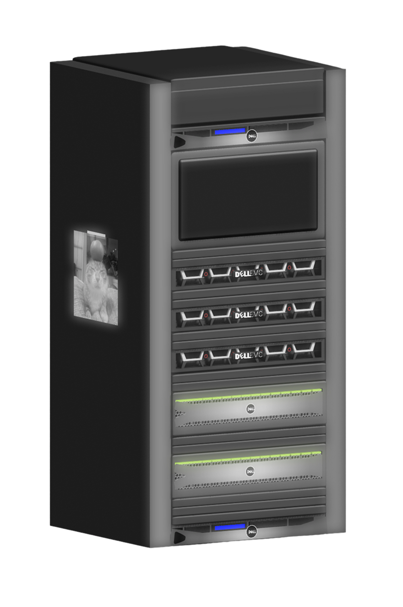

A little easter egg included!
The real server rack does in fact have a picture of a cat stuck to the side
Management Server (R230 Dell)
Screen (for some reason the actual in person screen constantly displays a zoomed-in picture of one of our members' face..)
Proxmox Servers (R640 Dell)
Storage Tiers (R730xd Dell)